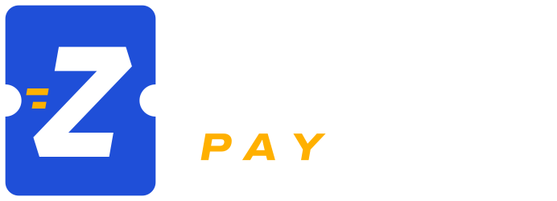

Abrindo o totem...
Parear este aparelho
No painel, abra Estrutura › Totens, toque em Parear e digite aqui o código de 8 números.
!
Totem indisponível
Autoatendimento
Pediu, pagou,
zilou.
Sem fila. Escolha, pague e retire no balcão.
O que vai ser hoje?
TotalR$ 0,00
Deseja nota fiscal?
Digite o CPF
Pague com Pix
Abra o app do seu banco, escolha Pix e aponte a câmera.
Este código vale por --:--
Aguardando o pagamento...
💳
Pague na maquininha
Aperte o botão verde da maquininha
Enviando para a maquininha...
Tempo para pagar: --:--
Conectando à maquininha...
Acesso do operador
Digite o PIN do ponto de venda
Diagnóstico
Este aparelho
-
Modo quiosque
-
Impressora de comprovante ou fichas (toque para escolher)
Papel da impressora
Última venda (papel acabou ou impressora descarregou)
-
Leitor de cartão (toque para escolher)
Conta PagBank
Verificando...
Testes
Aparência da tela do cliente